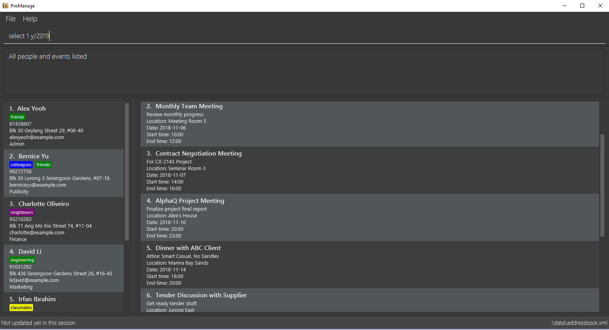

By: Team 16-2 Since: Sept 2018 Licence: MIT
1. Introduction
iHelp is professional desktop application for managing complex projects. More importantly, iHelp is optimized for those who prefer to work with a Command Line Interface (CLI) while still having the benefits of a Graphical User Interface (GUI). iHelp can help you manage project scheduling effectively. Interested? Jump to the Section 2, “Quick Start” to get started. Enjoy!
2. Quick Start
-
Ensure you have Java version
9or later installed in your Computer. -
Download the latest
addressbook.jarhere. -
Copy the file to the folder you want to use as the home folder for your iHelp App.
-
Double-click the file to start the app. The GUI should appear in a few seconds.
 -
Type the command in the command box and press Enter to execute it.
e.g. typinghelpand pressing Enter will open the help window. -
Some example commands you can try:
-
list: lists all contacts -
addn/John Doe p/98765432 e/johnd@example.com a/John street, block 123, #01-01: adds a contact namedJohn Doeto the Address Book. -
delete3: deletes the 3rd contact shown in the current list -
exit: exits the app
-
-
Refer to Section 3, “Features” for details of each command.
3. Features
Command Format
-
Words in
UPPER_CASEare the parameters to be supplied by the user e.g. inadd n/NAME,NAMEis a parameter which can be used asadd n/Some Meeting. -
Items in square brackets are optional e.g
DEPT, [MORE_DEPTS,]can be used asDept1, Dept2or asDept1. -
Items with
… after them can be used multiple times including zero times e.g.[MORE_DEPTS,]…can be used asDept1,Dept1, Dept2etc. -
Parameters can be in any order e.g. if the command specifies
n/NAME t/TIME,t/TIME n/NAMEis also acceptable.
3.1. Project Manager
3.1.1. Viewing help : help
Format: help
3.1.2. Adding an event: add
Adds an event to the address book, via a series of prompts
Adding events
Format/Prompts:
Enter a command: add
Enter event details: n/NAME d/DATE(DDMMYY) t/TIME l/LOCATION
Enter departments to invite: DEPARTMENT, [MORE DEPARTMENTS,]…
Enter description or instructions: INSTRUCTIONS
Example:
add event
n/CS2113 Event d/120918 t/1600 l/LT15
Profs, Tutors, Students
Creates an event named CS2113 Event, inviting 3 departments to it.
3.1.3. Listing all events: schedule
Display the full list of events in the project.
Format: schedule
3.1.4. Invite employees: invite
Add employees to the project event.
Format: invite EVENT_INDEX n/NAME
Example: invite 10 n/John Doe
3.1.5. Remove employee: remove
Removes an employee from the project event.
Format/Prompts: remove EVENT_INDEX n/NAME
Example: remove 10 n/John Doe
3.1.6. Editing an event: edit
Edits the event at the specified INDEX. The index refers to the index number shown in the displayed event list. The index must be a positive integer 1, 2, 3, …
Input nil if it is not the field to be changed.
Format:
Enter a command: edit [index]
Enter event details: n/NAME d/DATE t/TIME l/LOCATION or nil
Enter departments to invite: DEPARTMENT [MORE DEPARTMENTS,]…or nil
Examples:
* Enter a command: edit 10
Enter event details: n/CS2113 Lecture d/Sept 2018 t/1600 l/LT 17
Enter departments to invite: HR
3.1.7. Locating events by name: find
Finds the event whose names contain any of the given keywords.
Format: find KEYWORD [MORE_KEYWORDS]
Examples:
-
find CS2113
ReturnsCS2113 LECTUREandCS2113 TUTORIAL -
find CS2113 CS2030
Returns any event having namesCS2113orCS2030
3.1.8. Deleting an event : delete
Delete the event at the specified INDEX.
Format: delete INDEX
Examples:
-
schedule
delete 2
Deletes the 2nd event in the address book. -
find Meeting
delete 1
Deletes the 1st event in the results of thefindcommand.
3.1.9. Selecting an event: select
Selects the event identified by the index number used in the displayed event list.
Format: select INDEX
Examples:
-
schedule
select 2
Selects the 2nd event in the event schedule. -
find Meeting
select 1
Selects the 1st event in the results of thefindcommand.
3.1.10. Listing entered commands : history
Lists all the commands that you have entered in reverse chronological order.
Format: history
|
Pressing the ↑ and ↓ arrows will display the previous and next input respectively in the command box. |
3.1.11. Undoing previous command : undo
Restores the event schedule to the state before the previous undoable command was executed.
Format: undo
|
Undoable commands: those commands that modify the event schedule’s content ( |
Examples:
-
delete 1
list
undo(reverses thedelete 1command) -
select 1
list
undo
Theundocommand fails as there are no undoable commands executed previously. -
delete 1
clear
undo(reverses theclearcommand)
undo(reverses thedelete 1command)
3.1.12. Redoing the previously undone command : redo
Reverses the most recent undo command.
Format: redo
Examples:
-
delete 1
undo(reverses thedelete 1command)
redo(reapplies thedelete 1command) -
delete 1
redo
Theredocommand fails as there are noundocommands executed previously. -
delete 1
clear
undo(reverses theclearcommand)
undo(reverses thedelete 1command)
redo(reapplies thedelete 1command)
redo(reapplies theclearcommand)
3.1.13. Clearing all entries : clear
Clears all entries from the event schedule.
Format: clear
3.1.14. Exiting the program : exit
Exits the program.
Format: exit
3.1.15. Saving the data
Address book data are saved in the hard disk automatically after any command that changes the data.
There is no need to save manually.
3.2. Department Head
|
Department Head can only access his own department’s event |
3.2.1. Viewing help : help
Format: help
3.2.2. Adding an event: add
Adds an event to the address book, via a series of prompts
Adding events
Format/Prompts:
Enter a command: add
Enter event details: n/NAME d/DATE(DDMMYY) t/TIME l/LOCATION
Enter departments to invite: DEPARTMENT, [MORE DEPARTMENTS,]…
Enter description or instructions: INSTRUCTIONS
Example:
add event
n/CS2113 Event d/120918 t/1600 l/LT15
Profs, Tutors, Students
Creates an event named CS2113 Event, inviting 3 departments to it.
3.2.3. Listing all events: schedule
Display the full list of events in the project.
Format: schedule
3.2.4. Invite employees: invite
Add employees to the project event.
Format: invite EVENT_INDEX n/NAME
Example: invite 10 n/John Doe
3.2.5. Remove employee: remove
Add employees to the project event.
Format/Prompts: invite EVENT_INDEX n/NAME
Example: invite 10 n/John Doe
3.2.6. Editing an event: edit
Edits the event at the specified INDEX. The index refers to the index number shown in the displayed event list. The index must be a positive integer 1, 2, 3, …
Input nil if it is not the field to be changed.
Format:
Enter a command: edit [index]
Enter event details: n/NAME d/DATE t/TIME l/LOCATION or nil
Enter departments to invite: DEPARTMENT [MORE DEPARTMENTS,]…or nil
Examples:
* Enter a command: edit 10
Enter event details: n/CS2113 Lecture d/Sept 2018 t/1600 l/LT 17
Enter departments to invite: HR
3.2.7. Locating events by name: find
Finds the event whose names contain any of the given keywords.
Format: find KEYWORD [MORE_KEYWORDS]
Examples:
-
find CS2113
ReturnsCS2113 LECTUREandCS2113 TUTORIAL -
find CS2113 CS2030
Returns any event having namesCS2113orCS2030
3.2.8. Deleting an event : delete
Delete the event at the specified INDEX.
Format: delete INDEX
Examples:
-
schedule
delete 2
Deletes the 2nd event in the address book. -
find Meeting1
delete 1
Deletes the 1st event in the results of thefindcommand.
3.2.9. Selecting an event: select
Selects the event identified by the index number used in the displayed event list.
Format: select INDEX
Examples:
-
schedule
select 2
Selects the 2nd event in the event schedule. -
find Meeting
select 1
Selects the 1st event in the results of thefindcommand.
3.2.10. Listing entered commands : history
Lists all the commands that you have entered in reverse chronological order.
Format: history
|
Pressing the ↑ and ↓ arrows will display the previous and next input respectively in the command box. |
3.2.11. Undoing previous command : undo
Restores the event schedule to the state before the previous undoable command was executed.
Format: undo
|
Undoable commands: those commands that modify the event schedule’s content ( |
Examples:
-
delete 1
list
undo(reverses thedelete 1command) -
select 1
list
undo
Theundocommand fails as there are no undoable commands executed previously. -
delete 1
clear
undo(reverses theclearcommand)
undo(reverses thedelete 1command)
3.2.12. Redoing the previously undone command : redo
Reverses the most recent undo command.
Format: redo
Examples:
-
delete 1
undo(reverses thedelete 1command)
redo(reapplies thedelete 1command) -
delete 1
redo
Theredocommand fails as there are noundocommands executed previously. -
delete 1
clear
undo(reverses theclearcommand)
undo(reverses thedelete 1command)
redo(reapplies thedelete 1command)
redo(reapplies theclearcommand)
3.2.13. Clearing all entries : clear
Clears all entries from the event .
Format: clear
3.2.14. Exiting the program : exit
Exits the program.
Format: exit
3.2.15. Saving the data
Address book data are saved in the hard disk automatically after any command that changes the data.
There is no need to save manually.
3.3. Employee
3.3.2. Requests for a statistics of a week or get a suggested common meeting time by analysing multiple users’ calendars: query
Examples:
-
query stats
Displays the statistics of a week -
query meetings
Displays a suggested common meeting time
4. FAQ
Q: How do I transfer my data to another Computer?
A: Install the app in the other computer and overwrite the empty data file it creates with the file that contains the data of your previous Address Book folder.
5. Command Summary
-
Help :
help -
Add
Enter event details:n/NAME d/DATE(DDMMYY) t/TIME l/LOCATION
Enter departments to invite:DEPARTMENT, [MORE DEPARTMENTS,]…
Enter description or instructions:INSTRUCTIONS
e.g.
add event
n/CS2113 Event d/120918 t/1600 l/LT15
Profs, Tutors, Students -
Schedule :
schedule -
Invite: ‘invite EVENT_INDEX n/NAME’
e.g.invite 10 n/John Doe -
Remove: remove EVENT_INDEX n/NAME’
e.g.remove 10 n/John Doe -
Edit :
Enter a command:edit [index]
Enter event details:n/NAME d/DATE t/TIME l/LOCATION or nil
Enter departments to invite:DEPARTMENT [MORE DEPARTMENTS,]…or nil
e.g.
Enter a command: edit 10
Enter event details: n/CS2113 Lecture d/Sept 2018 t/1600 l/LT 17 Enter departments to invite: HR -
Find :
find KEYWORD [MORE_KEYWORDS]
e.g.find CS2113 -
Delete :
delete INDEX
e.g.delete 3 -
Select :
select INDEX
e.g.select 2 -
History :
history -
Clear :
clear -
Undo :
undo -
Redo :
redo